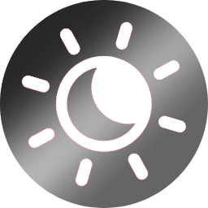
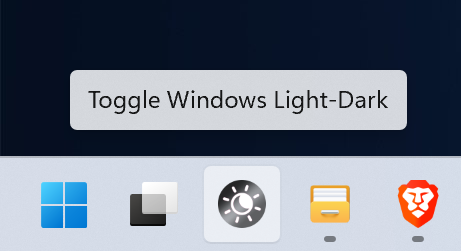

Toggle Windows Dark/Light Mode
A single instant click to change Windows 11 color theme.
0.03 MB executable
Version 1.0.0 • Changelog • Freeware

Copyright © - Developed by Philip Andersen (renegadevi)